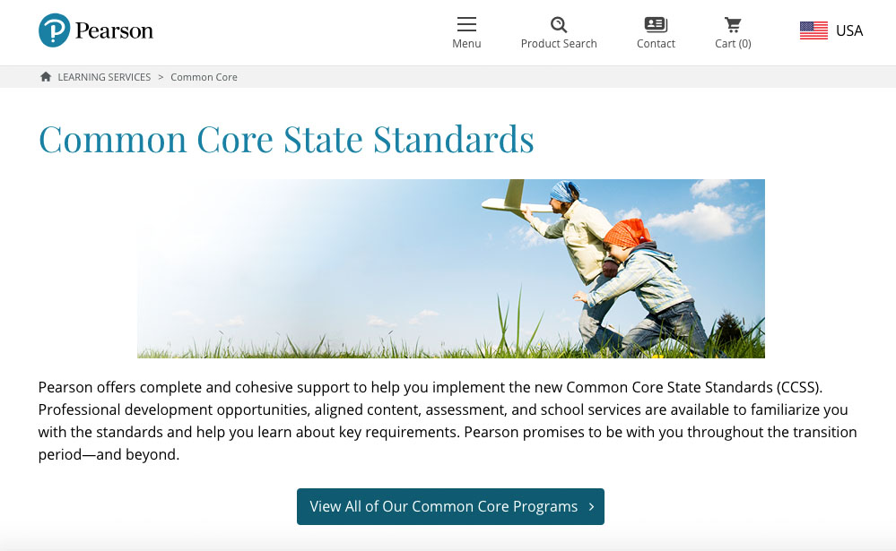
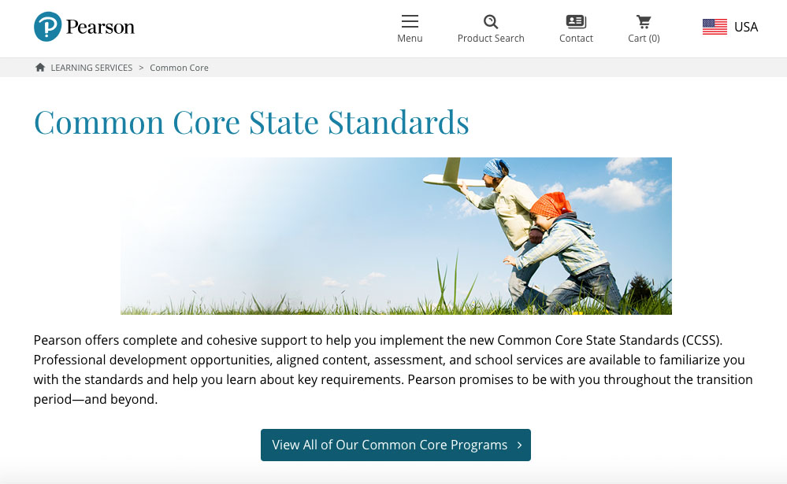

Pearson · iPad Application
Common Core Standards
UX leadership on a half-billion-dollar iPad app for students, teachers and administrators — in collaboration with Apple Computers.
The Project
This was a huge project with over a half-billion-dollar budget. It involved several teams across the US and was done in collaboration with Apple Computers. The objective was to create an iPad app for use in schools by students, teachers and administrators. I was in charge of UX for one of the teams responsible for a section of the project, and also for a period of time I coordinated the work of different UX designers and researchers to ensure design consistency.
 

General App Structure
We started by reviewing project requirements and discussing possible ways of structuring content and navigation. This gave us a general direction that governed further work on particular sections of the app. Since we had several hundred people working in different teams using agile, it was important to gain consensus early and follow a consistent pattern. That allowed us to move fairly quickly from concept to prototype.
Working in Agile UX
Since this was a large and complicated project, we worked in several teams using agile methodology. To move fast, most initial sketches were done on whiteboards with the whole team participating. That allowed the dev team to start ahead with programming while designers finished details. It also reduced the documentation workload — in most cases we used annotated whiteboard photos as documentation.
Adding Proper Wireframes
During sprints, while dev teams worked on backend and functionality, I would quickly create proper wireframes based on earlier defined design strategy and whiteboard sketches. This generated proper project documentation and helped iron out any details overlooked during design sprints.
Applying Styles
To minimize documentation and maintain project speed, we developed a library of styles. These were immediately applied to the prototype via CSS and, after review and testing, any necessary changes were applied directly on the staging server. This was loosely based on Atomic Design principles and Live Styles coding environment.